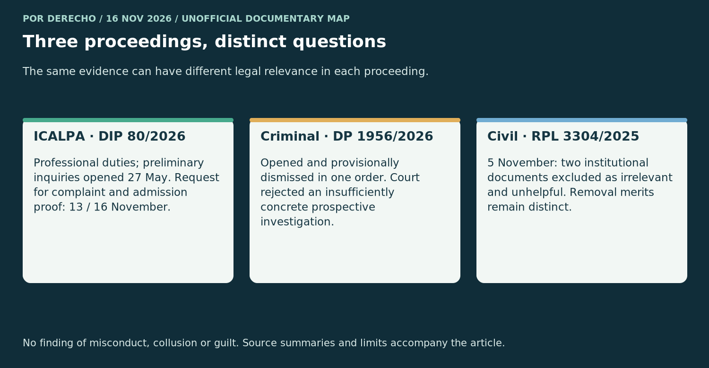
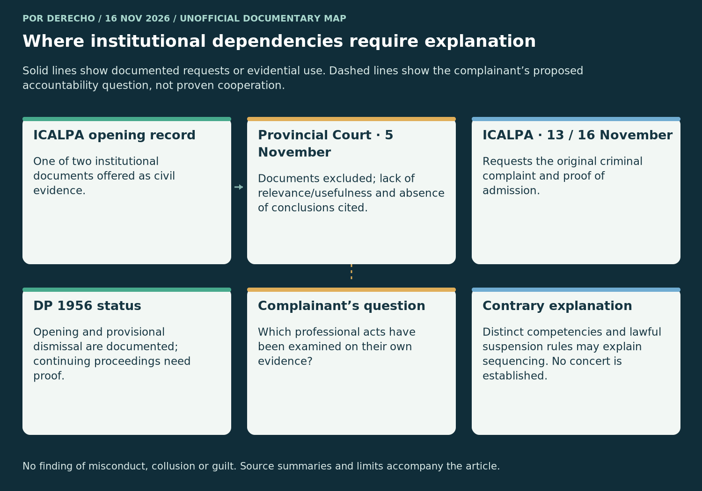
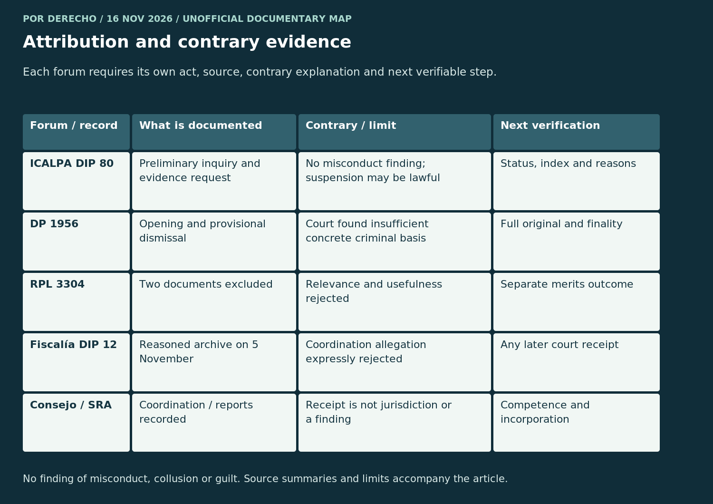
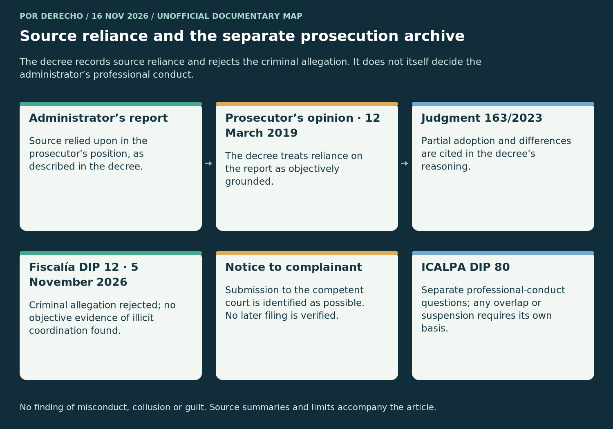

One record. Separate duties. Reasoned decisions.
ICALPA DIP 80/2026 concerns the insolvency administrator’s professional conduct. This dated documentary update distinguishes that inquiry from the criminal and civil proceedings, preserves the adverse decisions and identifies the questions still requiring an answer.
Documentary cutoff: 16 November 2026 · Complainant-controlled account · No disciplinary finding established
What changed on 16 November
ICALPA’s letter dated 13 November, with outgoing registration RS-005744 on 16 November, requests within ten days the original criminal complaint and documentary proof of its admission. It seeks to establish whether criminal proceedings concern the same or closely related facts. The letter is a request for evidence, not a disciplinary finding or an order suspending DIP 80.
The precise service date and resulting deadline require verification. This public page does not compute or certify a response deadline, and publication is not delivery of the requested evidence.
Chronology and procedural status
DIP 80/2026 preliminary inquiries opened. The historical record identifies an appointed rapporteur. Opening inquiries does not establish misconduct. Source
DP 1956/2026 was opened and provisionally dismissed in the same order. The court found no sufficiently specific criminal acts or objective basis for a prospective investigation. A subsequent appeal, reopening or present finality is not established in this reviewed record. Source
Consejo Canario coordination was registered as RE-000329 on 22 September; a consolidated 59-page submission followed on 30 September. This is not a formal appeal against a DIP 80 decision. Source
The preserved transmission record identifies further ICALPA material and separate Consejo Canario and SRA reports. Transmission does not prove incorporation, jurisdiction, investigation or a finding. Source
In RPL 3304/2025, with RPL 3319/2025 joined, the Provincial Court refused two institutional documents for lack of relevance and usefulness, also noting the absence of institutional conclusions. The order does not decide the merits of administrator removal. Source
Fiscalía DIP 12/2026 concerning a prosecutor was opened and archived. The decree rejects the alleged criminal coordination and finds no objective indications supporting it. This is separate from DP 1956 concerning the administrator. Source
ICALPA’s evidence request is dated 13 November and bears outgoing registration RS-005744 of 16 November. Admission, continuing criminal proceedings and a final judicial outcome must be distinguished. Source
The contrary reasoning is part of the record
The 5 November prosecutorial decree explains the prosecutor’s reliance on the administrator’s report and the partial adoption of that position by Judgment 163/2023 as consistent with lawful institutional functions. It rejects intentional arbitrariness, an illicit agreement and criminal participation for lack of objective supporting evidence. It also relies on differences between the relief sought and the judgment. These adverse reasons must be considered alongside the complainant’s position.
Source · DIP 12/2026The complainant maintains an unproven allegation of criminal coordination among the administrator, prosecutor and court, involving disputed insolvency propositions, reversal of responsibility and financial consequences. The source-reliance sequence is a question for examination; substantive agreement does not prove concerted action, corruption or guilt. Each person’s act, duty, knowledge, intent, causal contribution and lawful alternative require separate evidence.
The accompanying notice identifies the possibility of submitting the complaint to the competent court under Article 773 of the Criminal Procedure Act. No subsequent court filing is verified here. This account does not decide finality or the admissibility of any future application.
Documentary map 01 / 04
Three proceedings, distinct questions
The same evidence can have different legal relevance in each proceeding.


Read the full diagram as text
ICALPA · DIP 80/2026
Professional duties; preliminary inquiries opened 27 May. Request for complaint and admission proof: 13 / 16 November.
Criminal · DP 1956/2026
Opened and provisionally dismissed in one order. Court rejected an insufficiently concrete prospective investigation.
Civil · RPL 3304/2025
5 November: two institutional documents excluded as irrelevant and unhelpful. Removal merits remain distinct.
Documentary map 02 / 04
Where institutional dependencies require explanation
Solid lines show documented requests or evidential use. Dashed lines show the complainant’s proposed accountability question, not proven cooperation.


Read the full diagram as text
ICALPA opening record
One of two institutional documents offered as civil evidence.
Provincial Court · 5 November
Documents excluded; lack of relevance/usefulness and absence of conclusions cited.
ICALPA · 13 / 16 November
Requests the original criminal complaint and proof of admission.
DP 1956 status
Opening and provisional dismissal are documented; continuing proceedings need proof.
Complainant’s question
Which professional acts have been examined on their own evidence?
Contrary explanation
Distinct competencies and lawful suspension rules may explain sequencing. No concert is established.
Documentary map 03 / 04
Attribution and contrary evidence
Each forum requires its own act, source, contrary explanation and next verifiable step.


Read the full diagram as text
| Forum / record | What is documented | Contrary / limit | Next verification |
|---|---|---|---|
| ICALPA DIP 80 | Preliminary inquiry and evidence request | No misconduct finding; suspension may be lawful | Status, index and reasons |
| DP 1956 | Opening and provisional dismissal | Court found insufficient concrete criminal basis | Full original and finality |
| RPL 3304 | Two documents excluded | Relevance and usefulness rejected | Separate merits outcome |
| Fiscalía DIP 12 | Reasoned archive on 5 November | Coordination allegation expressly rejected | Any later court receipt |
| Consejo / SRA | Coordination / reports recorded | Receipt is not jurisdiction or a finding | Competence and incorporation |
Documentary map 04 / 04
Source reliance and the separate prosecution archive
The decree records source reliance and rejects the criminal allegation. It does not itself decide the administrator’s professional conduct.


Read the full diagram as text
Administrator’s report
Source relied upon in the prosecutor’s position, as described in the decree.
Prosecutor’s opinion · 12 March 2019
The decree treats reliance on the report as objectively grounded.
Judgment 163/2023
Partial adoption and differences are cited in the decree’s reasoning.
Fiscalía DIP 12 · 5 November 2026
Criminal allegation rejected; no objective evidence of illicit coordination found.
Notice to complainant
Submission to the competent court is identified as possible. No later filing is verified.
ICALPA DIP 80
Separate professional-conduct questions; any overlap or suspension requires its own basis.
Professional competence, with the actual suspension rules
Article 6(1) of the 2024 disciplinary regulation provides for initiation and suspension when criminal proceedings are being conducted concerning the same or closely linked facts. Article 6(5) also permits suspension in a non-criminal judicial case where the facts cannot rationally be separated. Article 16 governs preliminary inquiries, including their resolution and a three-month period subject to exceptional circumstances. ICALPA should identify the applicable rule, actual procedural status and overlapping facts; this page does not prejudge that determination. The regulation’s scope and any applicable autonomous or corporate rules must also be considered.
ICALPA’s official 2024 regulation notice · Regulation: Articles 2, 6 and 16
Five questions requiring a reasoned answer
- Certify the current DIP 80 status, rapporteur, incorporated submissions and documentary index.
- Distinguish the opening, simultaneous provisional dismissal, any appeal and any verified finality of DP 1956.
- Identify the specific professional acts and evidence examined, with the respondent’s explanations and rights of defence.
- Explain any suspension by reference to the actual proceedings, overlapping facts and applicable rule; explain any exceptional extension.
- Give the reasoned procedural decision appropriate to the evidence and law, with applicable review information. No predetermined sanction is requested.
Source basis and limits
- ICALPA RS-005744, letter dated 13 November; outgoing register 16 November 2026. Historical opening record and workbench for 27 May.Evidence request; not a disciplinary outcome.
- DP 1956/2026 court order, three preserved page photographs; July date identified by the custody record.Opening and simultaneous provisional dismissal; current finality unverified.
- Provincial Court, Fourth Section, RPL 3304/2025, order dated 5 November 2026; four-page copy.Two proposed documents excluded; removal merits not decided by this order.
- Fiscalía DIP 12/2026, decree and accompanying notice signed 5 November 2026.Criminal allegation against prosecutor rejected; court-submission route identified.
- Consejo Canario RE-000329 registration record and 30 September consolidated submission.Coordination record; not an appeal or finding.
- Preserved 9 October ICALPA, Consejo and three separate SRA submissions, with transmission status recorded in private custody.No raw email, recipient data or provider identifiers reproduced; no merits acceptance inferred.
Only minimized documentary summaries and newly prepared explanatory diagrams appear here. Native notices, signatures, validation codes, private addresses, privileged advice and unredacted court material remain outside this publication. The diagrams are illustrations, not independent evidence.
Right of reply and correction: this is an independent account controlled by the complainant, not an ICALPA, court or Fiscalía publication. A correction should identify the disputed proposition and supporting source. Use the existing contact route on the DIP 80 workbench. No adverse inference follows from silence.